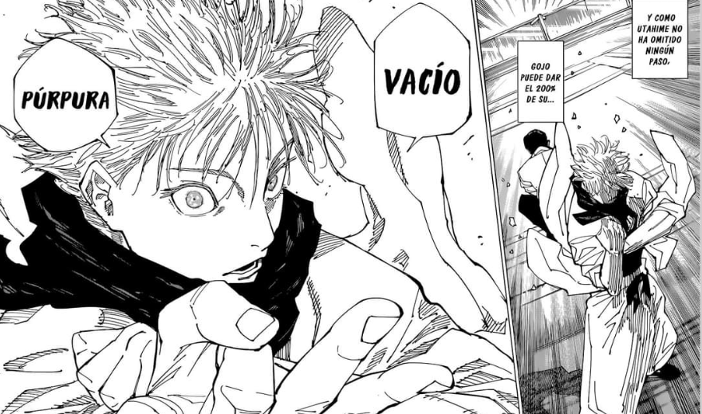

| El universo de Jujutsu Kaisen |
- Maldiciones: Seres espirituales malignos creados a partir de las emociones negativas de los humanos,
como el miedo, la ira y la tristeza.
- Energía Maldita: Una fuerza sobrenatural utilizada tanto por las maldiciones como por los hechiceros.
- Infinito de Satoru Gojo: Permite manipular el espacio a su alrededor para detener ataques o movimientos enemigos.
|

|
| Tecnicas malditas |
- Expansion de Dominio: Consiste en crear un espacio separado o “dominio” que le da una
ventaja al usuario al aumentar la precisión y la efectividad de sus ataques.
- Vacío Infinito: Crea un dominio que abruma a los enemigos con información infinita, dejándolos incapaces de moverse.
- Santuario Maldito: Genera un dominio que se manifiesta como un templo demoníaco,
donde los ataques de Sukuna son absolutamente precisos.
|

|
| Personajes principales |
- Yuji Itadori
- El protagonista de la serie, conocido por su gran fuerza física y su carácter altruista.
- Satoru Gojo
- Un maestro en la escuela y uno de los hechiceros más fuertes del mundo.
Posee técnicas únicas y es conocido por su carisma y confianza.
- Nobara Kugisaki
- Una hechicera audaz y valiente, con una personalidad fuerte.
Utiliza clavos y martillos imbuidos con energía maldita como armas.
|

|